|《动物行为》
| 建议提前观看短片
这部奥斯卡提名短片非常有意思。
一个心里互助咨询会上，一群小动物各有各的问题。
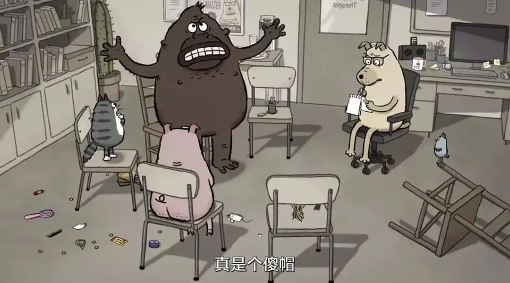
小鸟活在童年阴影的恐惧中。
小猫则陷入到洁癖中无法自拔。
小猪贪恋美食，生活无法节制。
水蛭患有分离性焦虑症，无法忍受与男友分别。
螳螂则是个性瘾者，欢愉时刻会杀掉自己的伴侣。
只有狗医生看上去很正常，温文尔雅又极富耐心。
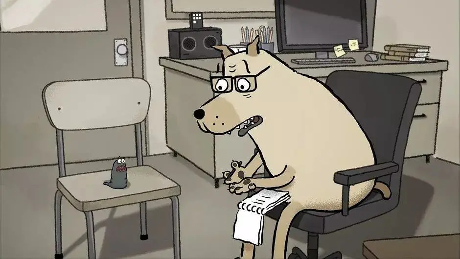
大家坐在一起互相倾诉，想让自己变得更好。
可事实上，大家七嘴八舌、鸡同鸭讲，彼此之间很难互相理解。
不仅没有理解，甚至还会彼此嘲笑。
因此，这样的交流会很难实现“互助”，更多只是给大家提供一个倾诉和说话的场合......
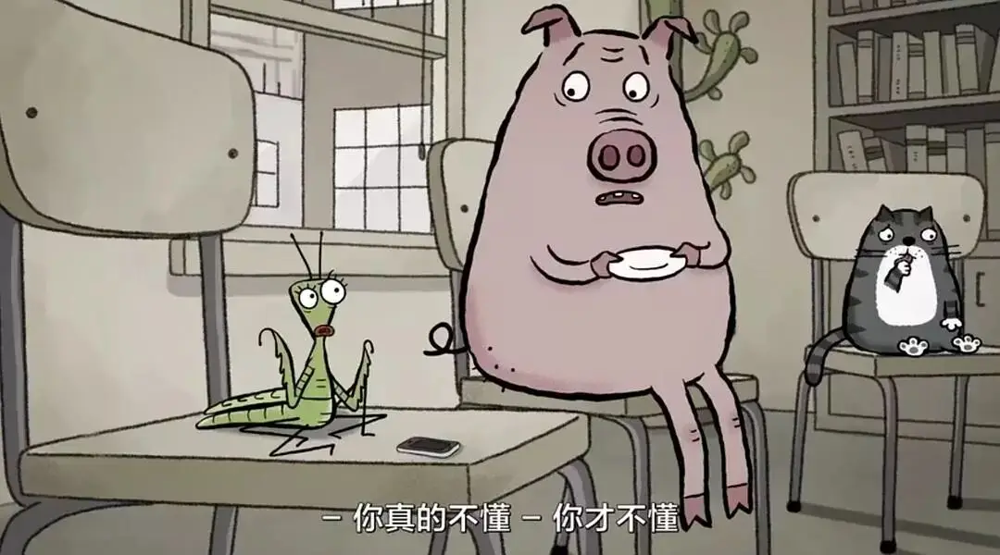
这部可爱的短片很生动地展现了人们普遍的困境：每个人都有自己难以逾越的问题。
比如暴怒、强迫症、孤独、淫乱、懒惰等。
这些问题让让我们难堪、痛苦，让我们觉得自己活得不像一个人。
面对这样的困境。
我们常常做的就是自我励志。
从此，我要早睡早起...从今天起，我要学会节制，不再放纵自己....
但结果往往像保罗所言“我所愿意的，我并不作；我所恨恶的，我倒去作”。
我们根本无法克服这些问题，就算是短时间内能够有所改善，但真正遇上事情了，那根深蒂固的“动物本性”就会展露无遗。
这个现象说的更直白一些，就是每个人都活在心口不一、知行难以合一的虚伪之中。
这种虚伪是时时刻刻的，所以煎熬也是是时时刻刻的。
我们既受不了别人的虚伪，更无法接受自己也是虚伪的。
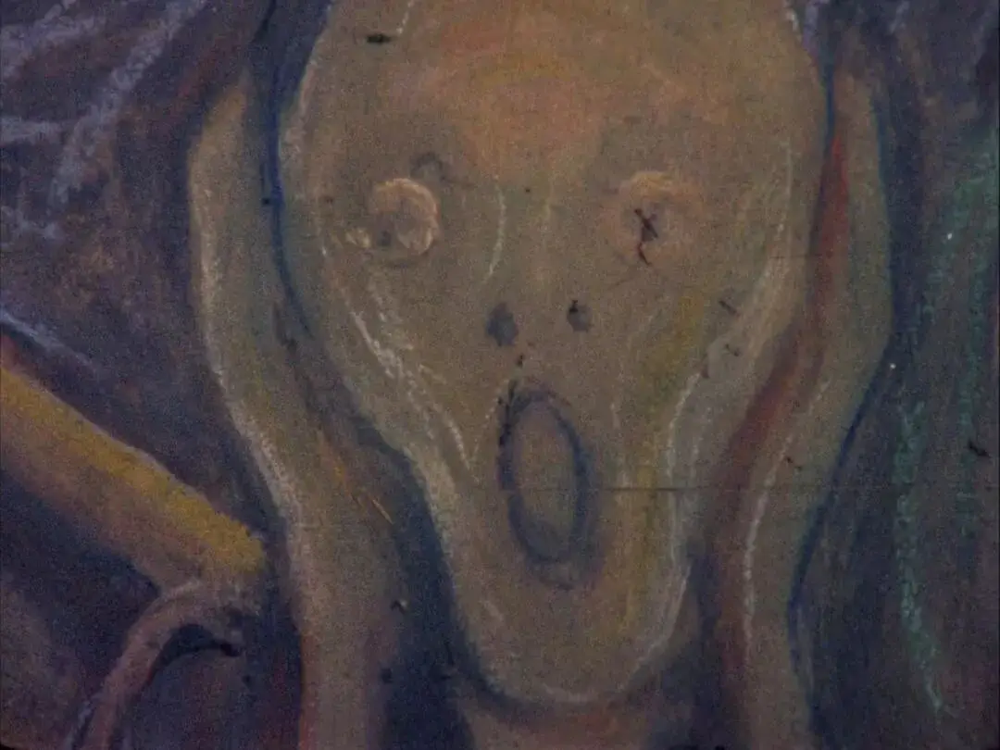
面对虚伪，有两种声音。
一种是较为普遍的道德主义。
大家认为懒惰、好色不好、不道德，应该努力去改变。
对己，道德往往会变成软弱无力的空洞说辞，会加增自己作为“双面人”的割裂和痛苦。
面对此绝境，很多人有意无意地会陷入到自我欺骗中。
一方面，不停地告诉自己，改变近在眼前。
另一方面在不停地麻痹自己的感觉，让自己成为一个活在当下的快乐的猪。
正如陀思妥耶夫斯基所言“谁最会欺骗自己，谁就能过得最快活。”
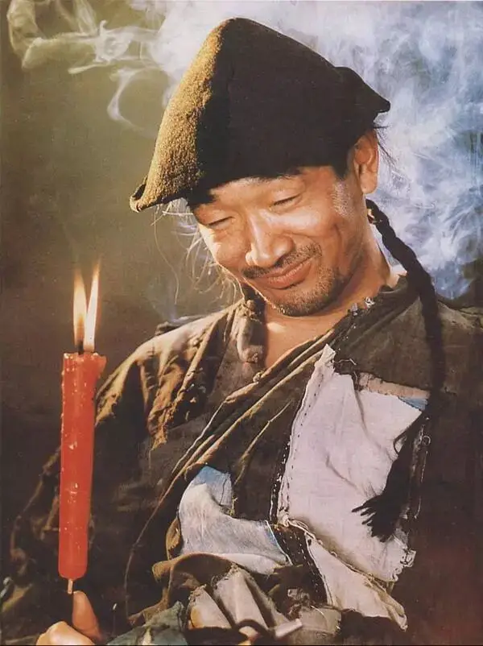
可当我们将道德主义对准别人时，软弱无力的说辞会立马变成强大傲慢的棒子。
我们明察秋毫，别人身上任何的不端都难逃我们的法眼。
于是，我们从一个“虚伪者”变成了一个令人生厌的“伪善者”。
自己做不到，却道貌岸然地要求别人。
所以从上世纪末开始，另一个响亮叛逆的声音出现了。
那就是接受自己，接受自己的全部，承认自己的懒惰。
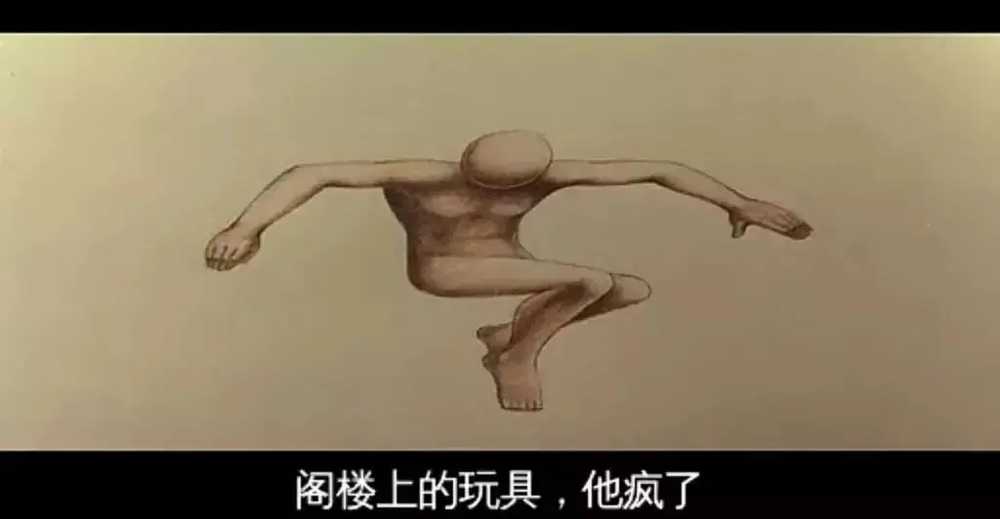
既然每个人都那么自私，那就大方地承认。
既然自己有着难以抑制的性欲，那就大胆你去追求自己喜欢的“肉体”。
无需隐藏，无需再像过去遮遮掩掩。
他们手拿酒瓶、穿着前卫，在摇滚音乐中大声歌唱着性、毒品、孤独和各种扭曲的东西。
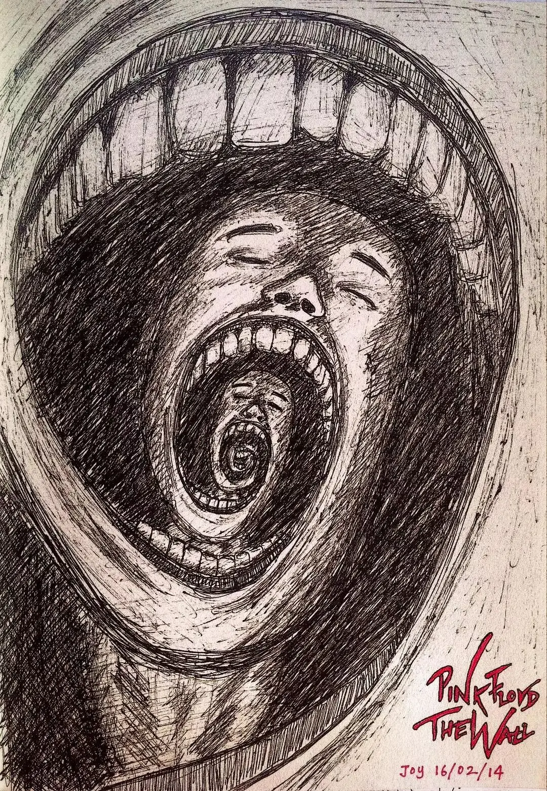
这些声音让无数人产生共鸣。
从没有一个时期像今天这样真诚勇敢，赤露敞开自己软弱和暴戾。
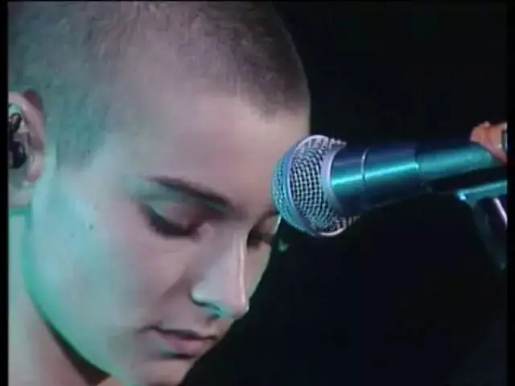
就像雨果在《巴黎圣母院》中所写：丑在美的旁边，畸形靠近优美，丑怪藏在崇高背后，美与丑并存，光明与黑暗相共。
当代的艺术、电影，已经不再像过去那样，在美丽中寻找美丽，在光明中寻找光明。
而是在孤独的长夜、在长满野草的坟头、在死亡的尽头、在乱伦的关系里，寻觅着作为人的复杂和真相。
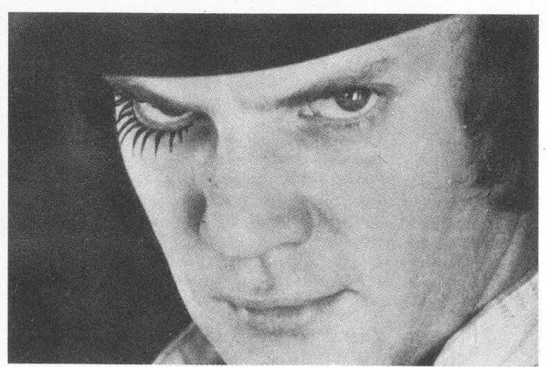
可当人们将一个又一个道貌岸然的面具摘下，将一堵又一堵“束缚自由”的城墙推倒时。
却发现，我们可以拆除，却没有建造。
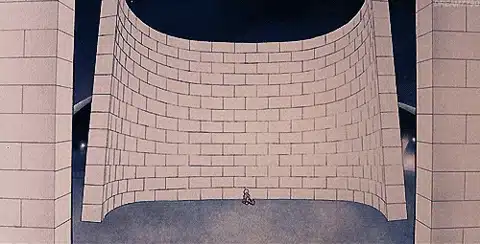
我们站在暗黑的阴影中品尝着作为人的清冷和孤独，却失去了走出阴影的能力和欲望。
我们活在无拘无束的性自由中，却发现自己成为了肉身欲望的奴隶。
我们再没有道德的束缚，却一头扎进了更大的虚无。
我们直面人性的扭曲，但这种直面却让我们变得更加扭曲。
从没有一个时期像今日这样，有那么多精神抑郁者，有那么多的性变态者和那么多杀人不眨眼的魔头。

原来，直面深渊成为了一个最大的谎言和诱惑。
我们原本就无法承载那么多的丑陋和黑暗，却自以为自己是可以主宰这一切的神明。
于是，我们凝视深渊时却被深渊吞噬。
我们被自己的孤独啃噬，我们被自我放逐。
我们舔舐着刀口，品尝着自己的鲜血，越舔越兴奋，越兴奋就越用力的舔舐。
直到流尽最后一滴鲜血。
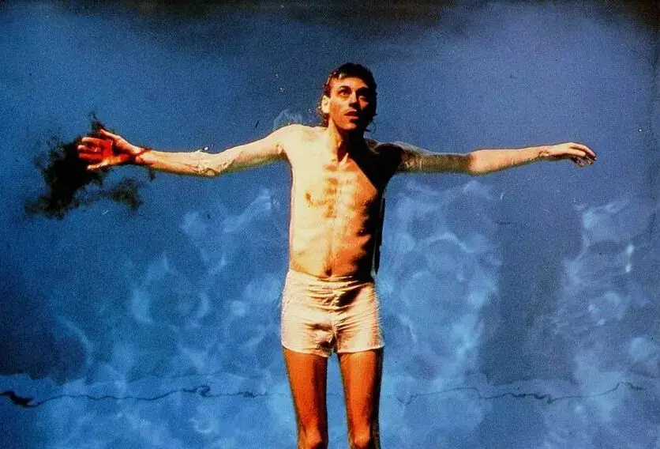
可，问题还在那里，虚伪还在那里!
道德主义有理想的方向却没有生命性的力量。
现代思潮有直面淋漓鲜血的勇气却失去了前进的方向和动力。
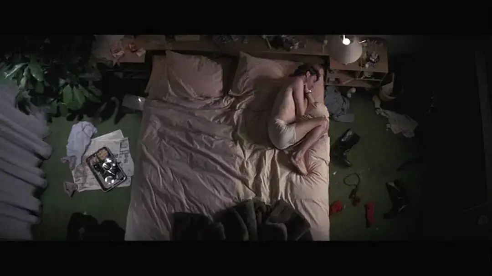
但无论如何，有一点是非常重要的，人类即使无法解决自己的问题，但从未丧失过改变的渴望。
爱伦•坡曾在他的作品中写道：
我为了达到个人目的而利用的那种虚伪，一种在我生命中那么长一段时间内充斥于我一言一行的虚伪，之所以能被我容忍仅仅是因为我胸中有一个熊熊燃烧的希望，我希望去实现那些我久久珍藏于心中的旅行梦幻。
让人区别于动物的，正是隐匿于虚伪背后的那份希望。
那是一股神秘的力量，向上通向我们头顶的星空，向下通向我们深不见底犹如黑洞般的内心。
她贯穿着当下与永恒、世俗与神圣。
冥冥之中，她虽未给我们指明具体的道路，却给我们一种方向感。
她与知识无关、与权力无关，她既存在教授、高官的心里，也不差毫厘地生长着农夫、平明百姓的心中。
她似乎是一种充满着各样复杂情感的云朵，却包含着极强的理性和意志。

她似乎是一个比你自己更了解自己的存在，当你行远踏错时，你能感受到她的悲伤，当你走在正确的道路上时，她会与你共鸣。
总之，当我们活在虚伪的煎熬中无能为力时，我们唯一可以抓住、可以肯定的就是那份渴望。
有些人明明没有爱心，却依旧努力和你搭话。
这的确是一种虚伪，可你要看到的不是她的虚伪，而是要珍重那份要去爱、要去改变的心意。
毕竟，如果她连装的欲望都没了，她的心也死了。
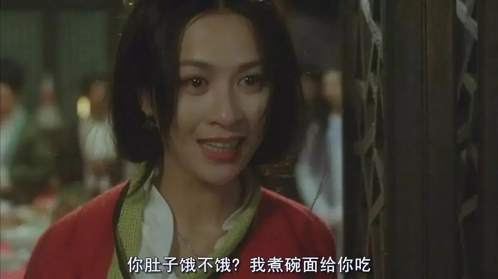
有些人蔑视道德、蔑视规则，眼睛直勾勾地望着你，然后说这个世界没有希望。
你要看到的不是他的悲观，也不是他的无情，而是那个曾有过渴望却被人灼伤的灵魂。
你要向他承认自己的虚伪，并不失真诚地指出他的自溢。
你要鼓励他敞开自己，从自我的阴影中走出。
这就是短片中狗医生让大猩猩感动的地方。
他在一样有着自身缺陷的狗医生身上，看到了包容，看到了爱。
这份力量给了大猩猩温暖，可以让他敞开心扉。
短片中的分享会像极了团契聚会。
常常有人分享了自己的难堪和软弱，却很难得到其他人的理解，也很少得到真正的辅导和帮助。
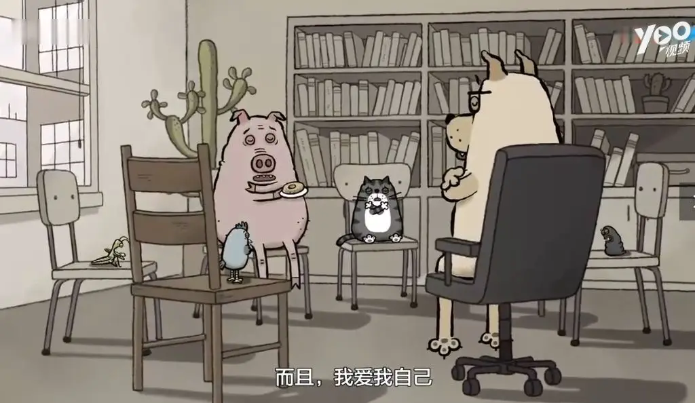
在一些人看来，这是在浪费时间，因为没有解决问题。
另一些人看来，有些人强迫着自己去聆听别人，这是一件非常虚伪的事。
可你们是否注意到他们愿意聆听、愿意敞开自己背后的那份深切渴望。
在这个以秒来算计的时代，一群人坐在那里花上几个小时聆听别人，这不是虚伪，是奇迹！
推荐阅读
▼
（点击图片即可获取全文）
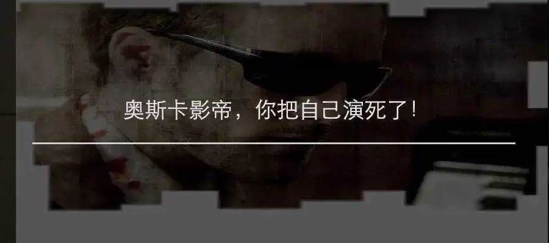
天起凉风
为防失联
大家可关注微博：600击
也可关注备用公众号 九百击
这里没有挑逗你眼目情欲的小鲜肉
也没有挑动你肉体情欲的段子
更没有膨胀你今生骄傲的鸡血
我们只在乎那些最质朴真诚的作品
在那里我们才能恢复真正的想象力
我们也坚信这才是我们真正需要的

ID:Six_hundred_hits
长按二维码，一键关注
【六百击】
-END-
电影评论
尽情分享朋友圈

苹果打赏通道
小提示：文末广告是腾讯配送广告，内容与本号无关，但您的每次点击（无需反复点）都会给平台带来几毛收益，欢迎您点击支持六百击。